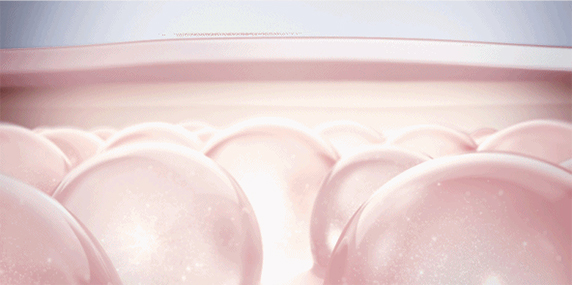
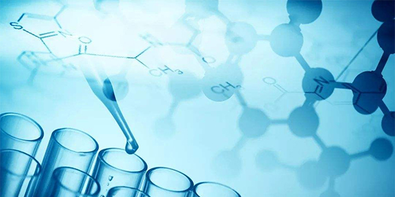
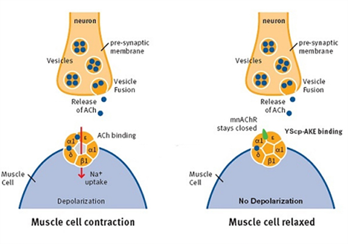

英国的科学家贝利斯和斯塔林首次在人体中发现了多肽的物质，由于其影响深远，诺贝尔委员会授于他们最高奖项：诺贝尔生理学奖
随着越来越深入的研究，肽的许多作用都被证实。肽是涉及人体内多种细胞功能的重要物质。肽可以合成细胞，并调节细胞的功能活动。肽在人体作为神经递质，传递信息。肽可在人体内作为运输工具，将人体所食的各种营养物质与各种维生素、生物素、钙及对人体有益的微量元素输送到人体各细胞、器官和组织。
肽是人体重要的生理调节物，它可全面调节人体生理功能，增强和发挥人体生理活性，它具有重要的生物学功能。肽对人的细胞活性、功能活动、生命存在来讲，具有不可替代的重要性。
荷兰帝斯曼集团成立实验室，集中国内外一流的前沿科技力量，将肽作为研究对象，应用于护肤、营养、制药等多个领域。以护肤为例：
因为我们的皮肤是一层很致密的结构，它的主要作用是防御，而不是吸收，所以，一种活性成分想要透过肌肤角质层，与它的亲水性、分子量、三维结构等都有关系。多肽本身的分子量会比较大（大于500道尔顿），又有亲水基团，皮肤角质层是拒绝进入的。
所以聪明的科学家又对多肽进行了结构改造，加上了棕榈酸或者其他亲油的基团，使多肽更加亲肤，所以肽的名称通常由修饰基—氨基酸数—后缀序号组成，就是为什么我们看到的多肽大多数都叫做棕榈酰XX肽或者乙酰基XX肽。
这里可能有人会问了，二肽二氨基丁酰苄基酰胺二乙酸盐和类蛇毒肽有什么关系呢?那就要从它的作用机理说起，二肽二氨基丁酰苄基酰胺二乙酸盐是一种模拟蛇毒血清的合成胜肽，其效果能直达肌底，模拟毒蛇毒液侵入人体后产生的神经麻痹肌肉收缩的特性，有效阻断肌肉收缩的信号传递,快速平复各类表情纹、静态纹及细纹,平滑肌肤。
类蛇毒肽被国外品牌逐渐广泛的应用于产品之中。而此时的国内仍停留在打“肉毒素”针剂、代购等渠道获取资源。
而此时荷兰帝斯曼集团多肽研究室力求以荷兰为中心辐射全球的服务理念，第一步锁定亚洲肌肤，拯救每一个追求冻龄的你。
布兰美亚——轻奢护肤“黑科技”，从此冻龄时光